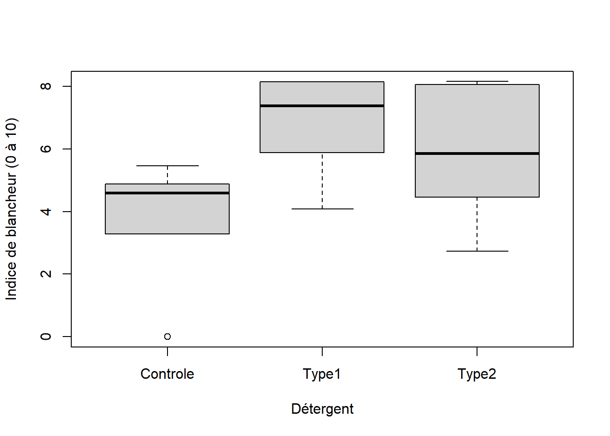
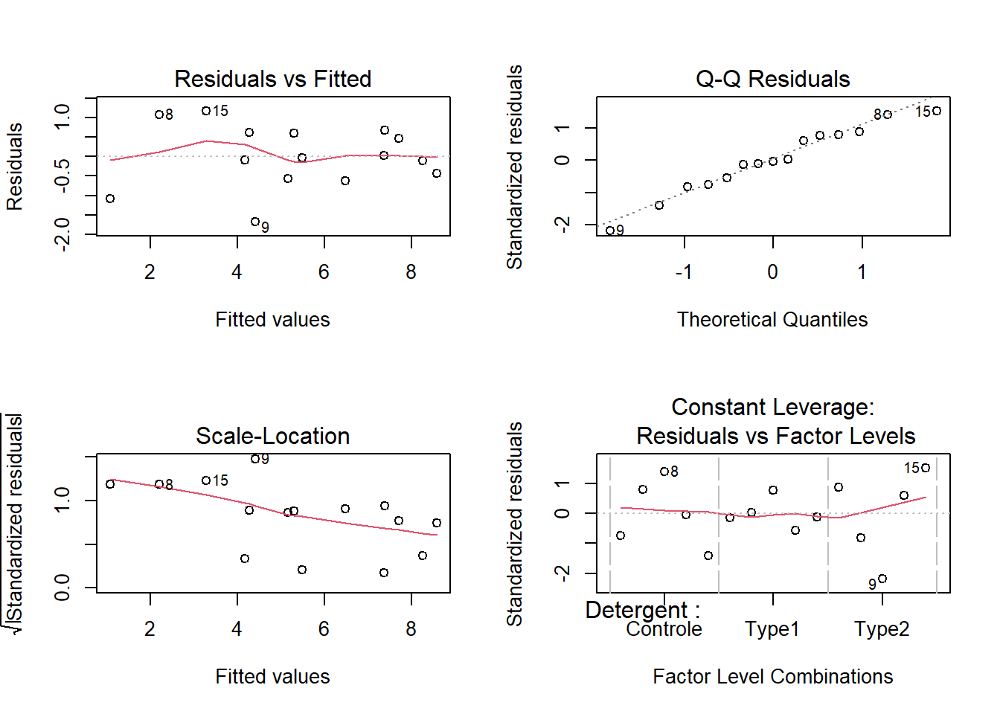
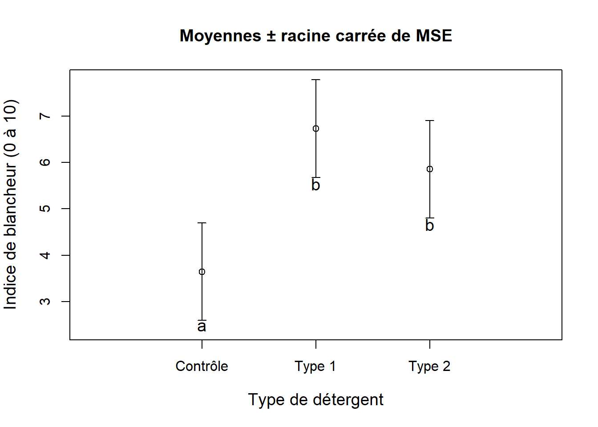

8.2 Autoévaluation
Les données peuvent être retrouvées dans le dossier Module 8.
Question 1
Donnez un avantage et un inconvénient associés à l’utilisation du dispositif en blocs complets aléatoires.
Réponse
Le dispositif en blocs complets aléatoires comporte des avantages tels que :
- il contrôle l’hétérogénéité environnementale (différences entre blocs);
- l’ANOVA en blocs complets aléatoires est plus puissante que l’ANOVA complètement aléatoire en présence de gradients;
- il est logistiquement intéressant lorsque la répétition est contrainte dans l’espace ou le temps;
- le bloc peut être un individu soumis à différents traitements ou des individus provenant d’une même portée (famille).
Les désavantages sont les suivants :
- l’ANOVA en blocs complets aléatoires est moins puissante que l’ANOVA à un critère lorsque l’effectif (\(n\)) est petit et que l’effet du bloc est faible;
- la dépendance potentielle des observations soumises aux différents traitements d’un même bloc dans des blocs trop petits;
- il ne permet pas de données manquantes;
- il ne permet pas de tester l’interaction entre le bloc et le facteur d’intérêt.
Question 2
Voici le jeu de données lavage.txt d’un design en blocs complets aléatoires destiné à évaluer la blancheur des vêtements (indice de 0 à 10) après avoir laver ces vêtements avec trois détergents différents (le conventionnel pour le contrôle et deux nouveaux types) ; et après qu’on ait appliqué sur ces vêtements des produits plus ou moins tachants (pouvoir tachant non-mesuré). Chaque bloc sera donc un produit tachant choisi au hasard (p. ex., boue, vin, ketchup) sur lequel on utilisera les trois détergents.
a. Effectuez une ANOVA en blocs complets aléatoires. Si vous rejetez \(H_o\) pour le facteur détergent, déterminez où se trouvent les différences. Interprétez les résultats et présentez les résultats sous forme graphique.
Réponse
On importe le jeu de données :
##importation
lavage <- read.table("Module_8/data/lavage.txt", header = TRUE)
##premières observations
head(lavage)## Blancheur Detergent Bloc
## 1 4.59 Controle 1
## 2 8.15 Type1 1
## 3 8.06 Type2 1
## 4 7.38 Type1 2
## 5 4.88 Controle 2
## 6 5.85 Type2 2## 'data.frame': 15 obs. of 3 variables:
## $ Blancheur: num 4.59 8.15 8.06 7.38 4.88 5.85 5.89 3.29 2.74 5.46 ...
## $ Detergent: chr "Controle" "Type1" "Type2" "Type1" ...
## $ Bloc : int 1 1 1 2 2 2 3 3 3 4 ...## NULLOn remarque que la variable n’est pas reconnue comme facteur et on doit la convertir en facteur avant de continuer :
## [1] "1" "2" "3" "4" "5"On note que le dispositif est complètement balancé (aucune donnée manquante) :
##nombre d'observations par combinaison de facteurs
tapply(X = lavage$Blancheur, INDEX = list(lavage$Detergent, lavage$Bloc),
FUN = length)## 1 2 3 4 5
## Controle 1 1 1 1 1
## Type1 1 1 1 1 1
## Type2 1 1 1 1 1Le diagramme de boîtes et moustaches montre les données brutes (Figure 8.12).
boxplot(Blancheur ~ Detergent, data = lavage,
ylab = "Indice de blancheur (0 à 10)",
xlab = "Détergent")
Figure 8.12: Diagramme de boîtes et moustaches présentant les données de la blancheur de vêtements lavés à l’aide d’un détergent conventionnel (Controle) et de deux nouveaux détergent (Type1 et Type2).
On exécute l’ANOVA en blocs complets aléatoires :
##ANOVA à deux critères sans répétitions
aov.bloc <- aov(Blancheur ~ Detergent + Bloc, data = lavage)On fait la vérification des suppositions d’homogénéité de la variance et de la normalité des résidus (Figure 8.13):
##préparation de la fenêtre graphique
##pour accomoder 4 graphiques sur la même page
par(mfrow = c(2, 2))
##présentation de quatre graphiques diagnostiques
plot(aov.bloc)
Figure 8.13: Diagnostics des suppositions d’homogénéité de la variance et de normalité des résidus à la suite de l’ANOVA en blocs complets aléatoires.
Puisque les suppositions de l’ANOVA en blocs complets aléatoires sont respectées (fig. 8.13), on peut procéder à l’interprétation des résultats. Le tableau d’ANOVA nous indique :
## Df Sum Sq Mean Sq F value Pr(>F)
## Detergent 2 25.29 12.646 11.421 0.00453 **
## Bloc 4 44.27 11.069 9.997 0.00335 **
## Residuals 8 8.86 1.107
## ---
## Signif. codes: 0 '***' 0.001 '**' 0.01 '*' 0.05 '.' 0.1 ' ' 1On conclut que les blocs et le type de détergent ont un effet sur la blancheur des vêtements après lavage. On peut effectuer des comparaisons multiples pour déterminer où se trouve les différences entre les groupes de détergent. On ne fait aucune comparaisons multiples pour les blocs, qui représentent différents produits tachants, puisque ce facteur ne nous intéresse pas vraiment. On inclut les blocs dans l’analyse pour tenir compte du dispositif expérimental que nous avons utilisé.
##moyenne des groupes
Moys <- tapply(X = lavage$Blancheur, INDEX = lavage$Detergent, FUN = mean)
Moys## Controle Type1 Type2
## 3.644 6.730 5.854## Tukey multiple comparisons of means
## 95% family-wise confidence level
##
## Fit: aov(formula = Blancheur ~ Detergent + Bloc, data = lavage)
##
## $Detergent
## diff lwr upr p adj
## Type1-Controle 3.086 1.1843628 4.987637 0.0042126
## Type2-Controle 2.210 0.3083628 4.111637 0.0254478
## Type2-Type1 -0.876 -2.7776372 1.025637 0.4257772On note deux groupes, l’un formé par les groupes Type1 et Type2, et l’autre formé par Controle. On peut représenter ces groupes à l’aide de traits :
| Contrôle | Type2 | Type1 |
|---|---|---|
| 3.642 | 5.852 | 6.732 |
Ou encore, on peut illustrer le résultat pour les différents niveaux du traitement Detergent directement dans un graphique (Figure 8.14).
##MSE de l'ANOVA
MSE <- 1.11
##vecteur pour créer l'axe des x's
Deter <- 1:3
##barres d'erreur
inf <- Moys - sqrt(MSE)
sup <- Moys + sqrt(MSE)
##graphique
##À noter que l'on crée le graphique avec suffisamment
##d'espace pour permettre le placement des barres d'erreurs
##ainsi que les lettres en bas. C'est pourquoi on étend
##la limite inférieure à 0.2 unités au bas du graphique
##au delà de la valeur minimale de la barre d'erreur.
plot(Moys ~ Deter, ylab = "Indice de blancheur (0 à 10)",
xlab = "Type de détergent",
type = "p", ylim = c(min(inf) - 0.2, max(sup)),
xlim = c(0, 4), cex.lab = 1.2, xaxt = "n",
main = "Moyennes ± racine carrée de MSE")
##ajout de l'axe des x's
axis(side = 1, at = c(1, 2, 3),
labels = c("Contrôle", "Type 1", "Type 2"))
##ajout de barres d'erreurs
arrows(x0 = Deter, x1 = Deter, y0 = inf, y1 = sup,
angle = 90, code = 3, length = 0.05)
##ajout des lettres
text(x = 1, y = 2.46, labels = "a", cex = 1.2)
text(x = 2, y = 5.54, labels = "b", cex = 1.2)
text(x = 3, y = 4.67, labels = "b", cex = 1.2)
Figure 8.14: Effets de deux nouveaux type de détergents et d’un détergent conventionnel contrôle sur la blancheur de vêtements ayant été tachés.
Type1 et Type2, mais que cette blancheur est nettement supérieure à celle du groupe avec un détergent conventionnel (Controle).
b. Était-ce justifié d’utiliser des blocs? Justifiez votre réponse.
Réponse
Oui, l’utilisation des blocs était justifiée puisque le termeBloc expliquait une partie importante de la variance de la variable réponse, tel qu’indiqué par un \(F_{4, 8}\) de 10 et un \(P = 0.0033\). De plus, le dispositif a été créé en bloc et c’est toujours une bonne idée d’inclure ce genre de facteur dans l’analyse pour refléter la structure du dispositif.